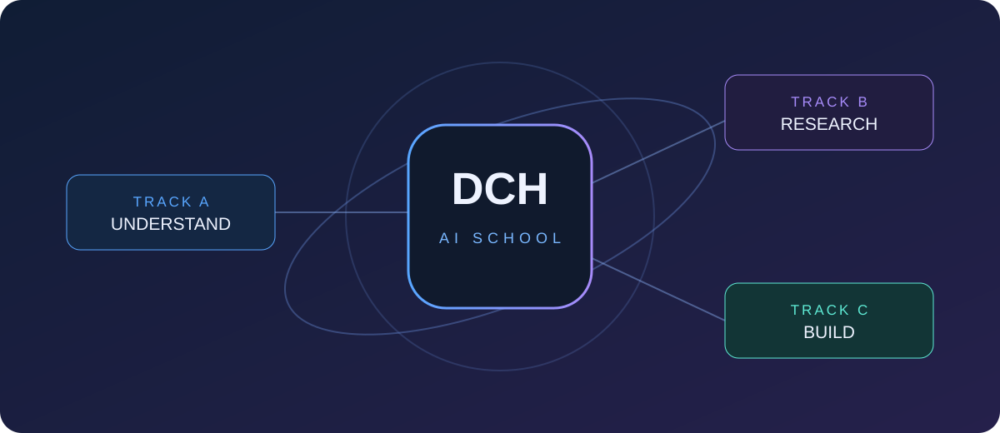

3 НОЯБРЯ 2026 · НОВОСТИ ШКОЛЫ
Начинаем открытое знакомство с AI Research DCH School
Первые направления, структура образовательного сайта и первая подробная лекция уже доступны для знакомства.
Читать публикацию ↗DCH SCHOOL JOURNAL
Авторские публикации о развитии школы, образовательных материалах, методах исследования и практическом применении искусственного интеллекта.

3 НОЯБРЯ 2026 · НОВОСТИ ШКОЛЫ
Первые направления, структура образовательного сайта и первая подробная лекция уже доступны для знакомства.
Читать публикацию ↗